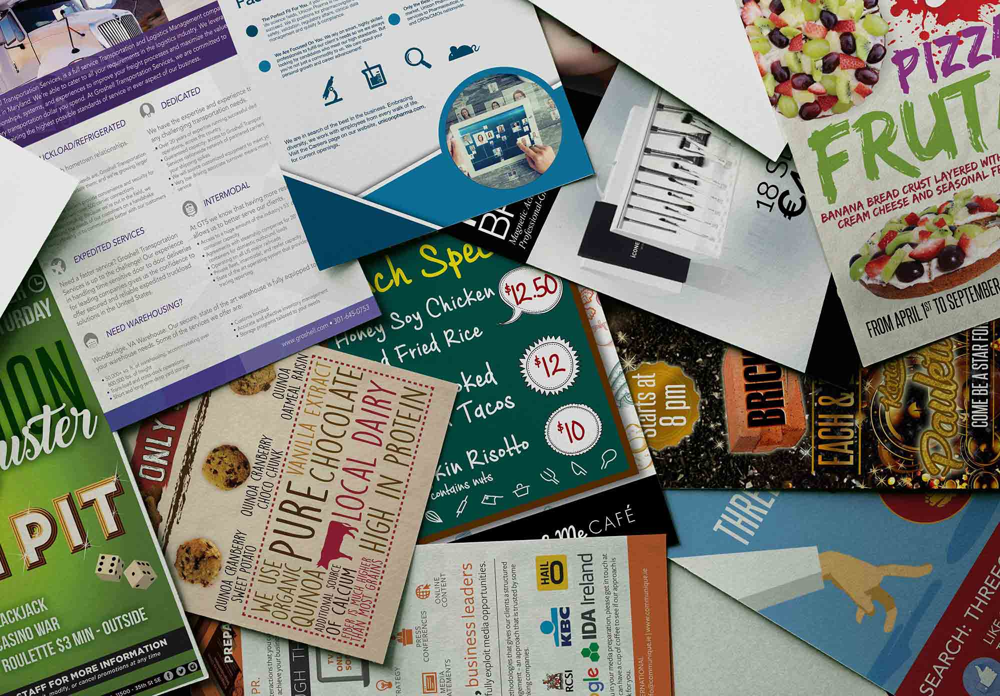
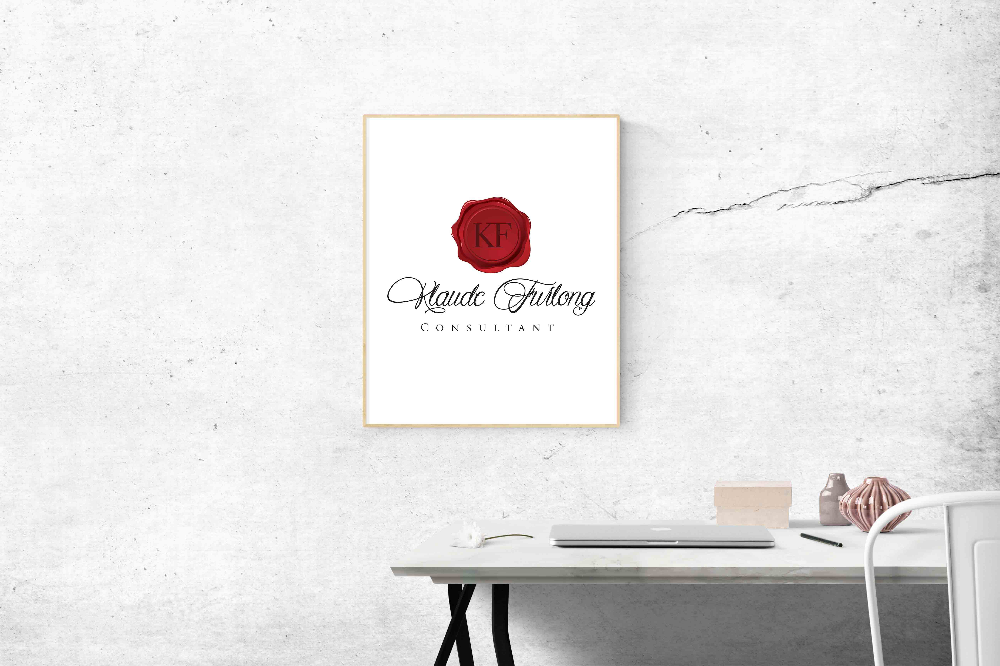
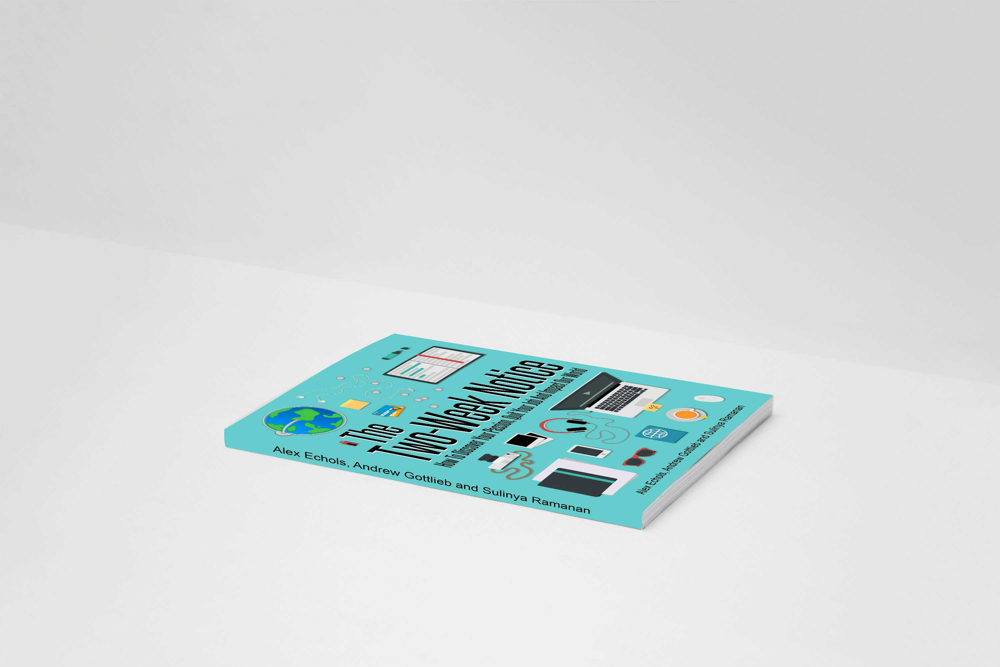
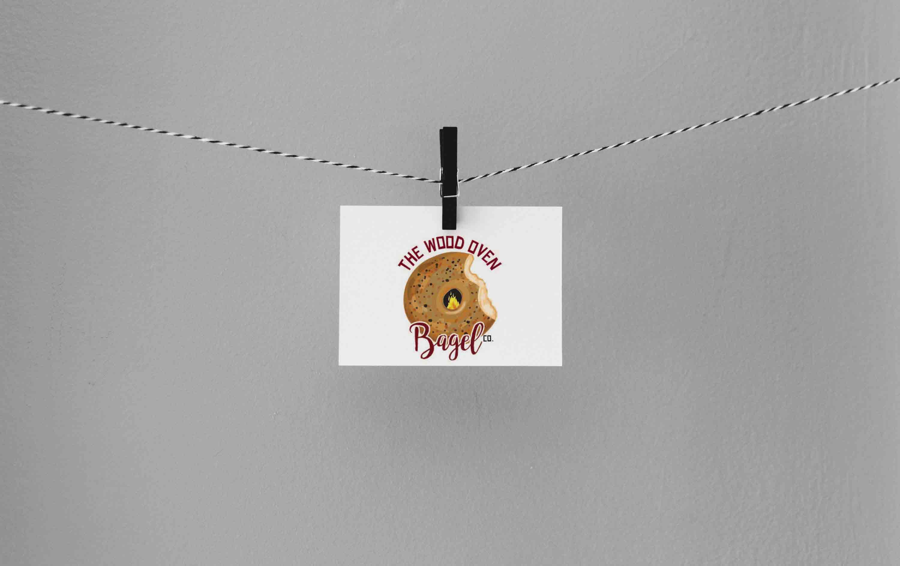
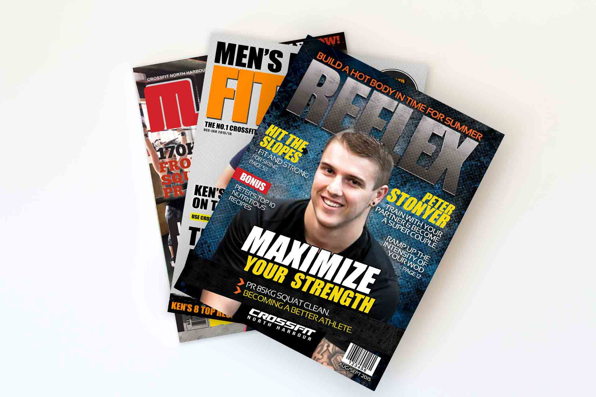
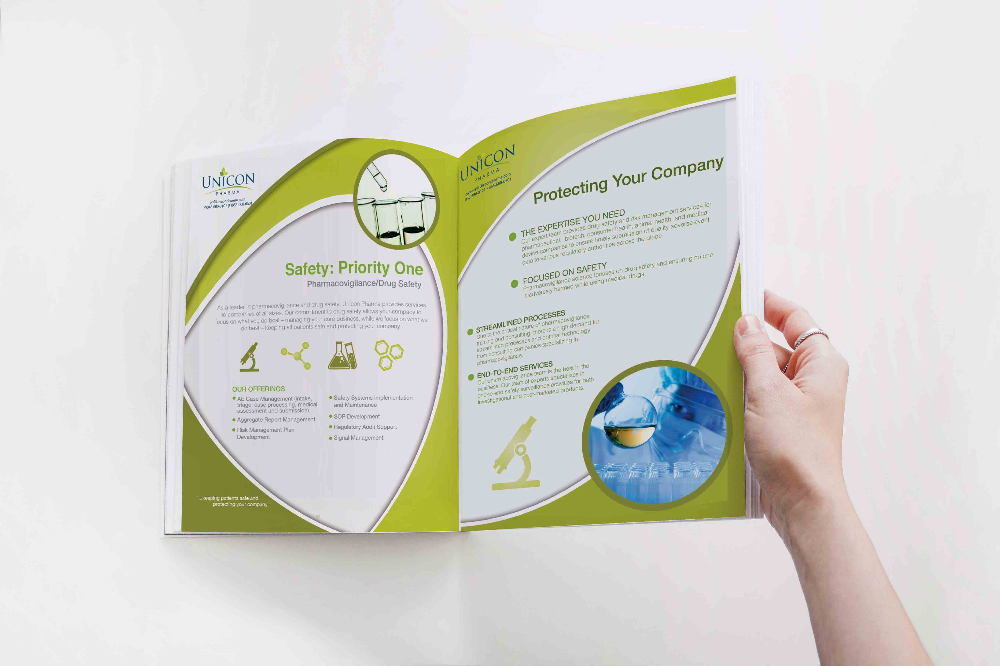
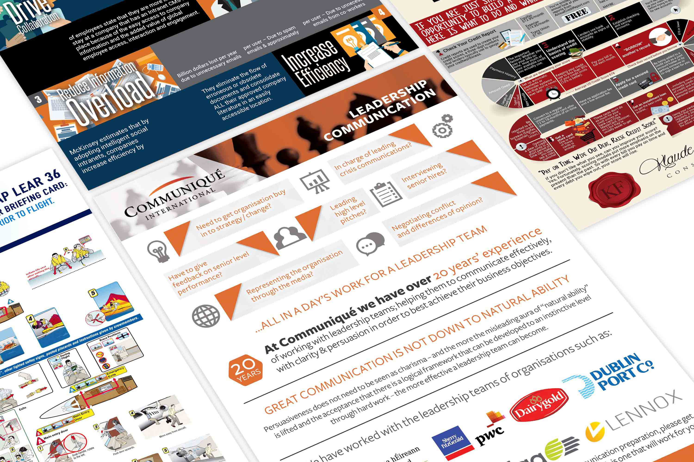

Posters | Flyers | Brochures
Skills:
Image Editing, Layout Design, Colour Blending, Icon Development, Print Ready Documents
Softwares Used:
Photoshop, Illustrator, Indesign, MS Word/Powerpoint
Minimum Build Time: 20 mins
Maximum Build Time: 4 Hours


Logo Design
Skills:
Image Editing, Layout Design, Colour Blending, Icon Development, Print Ready Documents
Softwares Used:
Photoshop, Illustrator
Description:
For this project I had to know my client through a personal level to design a logo, which is rare. The results of the project was really successful, a logo that truly symbolizes her work.
Book Cover Design
Skills:
Illustrator, Infographics, Vector Icon Design, Typography, Layout Design, Colour Blending
Softwares Used:
Photoshop, Illustrator
Description:
For this project, I had to follow design instructions strictly from the client . It was great working on this Book Cover because we really had to create something that would make you pick up the book from the shelf.


Logo Design
Skills:
Illustrator, Colouring, Vector Drawing, Typography, Layout Design,
Softwares Used:
Photoshop, Illustrator
Description:
Designer had full discretion to develop and conceptualize logo for a Bagel Company that does delivery. The client really wanted something fun, detailed and creative.
Magazine Cover
Skills:
Image Editing, Layout, Typography
Softwares Used:
Photoshop, Indesign
Minimum Build Time: 30 mins
Maximum Build Time: 1.5 hours


Report Designs
Skills:
Image Editing, Layout, Typography, Vector Icons
Softwares Used:
Photoshop, Illustrator, Indesign, MS Word/Powerpoint
Description:
Reports usually takes more time depending on how many pages a document contains. Also depending on how my clients want to use it, I have to design it efficiently for them to do last minute changes.
Information Graphics
Skills:
Vector Icons, Images, Layout Design
Softwares Used:
Illustrator
Description:
Infographics are meant to reduce reading time for potential customers. Although infographics are very visual, icon or pictogram design needs to be immediately relatable when read.
